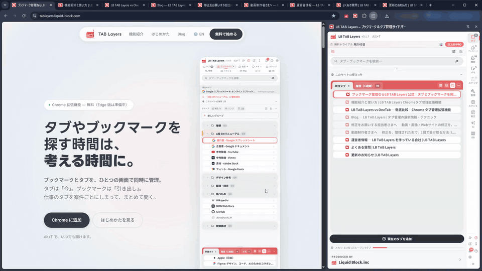
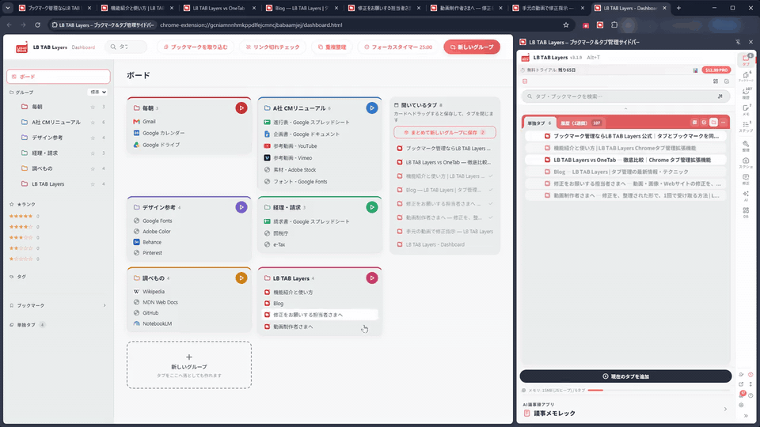
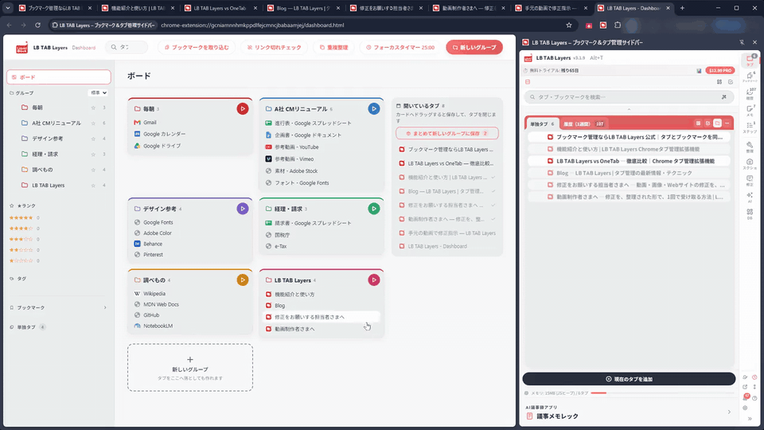

ダッシュボードを開く PRO
大きな画面で、全部を見わたす
場所：右の列「DB」／上のボタン
右の列の「DB」で、ダッシュボードが新しいタブで開きます。ボードでは、全部のグループが色つきのカードで並び、▶ でまとめて開けます。開いているタブを、カードへドラッグしてしまえます。PRO の機能です。

大きな画面で、全部を見わたす
場所：右の列「DB」／上のボタン
右の列の「DB」で、ダッシュボードが新しいタブで開きます。ボードでは、全部のグループが色つきのカードで並び、▶ でまとめて開けます。開いているタブを、カードへドラッグしてしまえます。PRO の機能です。

全グループを、色つきのカードで並べる。▶ でまとめて開く。開いているタブを、カードへドラッグしてしまう
場所：ダッシュボードの最初の画面
右の列の「DB」で、ダッシュボードが新しいタブで開きます。ボードでは、全部のグループが色つきのカードで並び、▶ でまとめて開けます。開いているタブを、カードへドラッグしてしまえます。PRO の機能です。

ページをカードで見て、メモ・★・タグを付ける。★の順に並べる
場所：左の一覧からグループを選ぶ
ダッシュボードの左の一覧からグループを選ぶと、中のページがカードで並びます。カードに、メモ・★・タグを付けられ、★の順に並べ替えられます。PRO の機能です（お試し期間中は使えます）。
グループ・タブ・Chrome のブックマークを、まとめて探す
場所：上の検索
ダッシュボードの上の検索から、グループ・保存したページ・開いているタブ・Chrome のブックマークを、まとめて探せます。結果は、種類ごとに分かれて出ます。PRO の機能です（お試し期間中は使えます）。

Chrome の全部のフォルダを見て、TAB Layers のグループにする
場所：左の「ブックマーク」
ダッシュボードの左の「ブックマーク」で、Chrome のブックマークのフォルダを全部見られます。選んだフォルダを、TAB Layers のグループにできます。PRO の機能です（お試し期間中は使えます）。
同じフォルダ・同じページを見つけて、まとめる
場所：上の「重複整理」
ダッシュボードの上の「重複整理」で、同じ名前のフォルダや、同じページのブックマークを見つけて、まとめられます。PRO の機能です（お試し期間中は使えます）。
開けなくなったブックマークを見つけて、ゴミ箱へ
場所：上の「リンク切れチェック」
ダッシュボードの上の「リンク切れチェック」で、開けなくなったブックマークを探して、ゴミ箱へ移せます。調べるために、保存したサイトへ順にアクセスします。PRO の機能です（お試し期間中は使えます）。
しまったグループの一覧。戻す・消す
場所：左の「アーカイブ」
ダッシュボードの左の「アーカイブ」に、しまったグループが並びます。ここから、戻したり、消したりできます。PRO の機能です（お試し期間中は使えます）。
ページの絵を、カードと一覧に出す。撮らないサイトを決められる
場所：設定 › プライバシー
設定 › プライバシー でサムネイルをオンにすると、ページの絵が、カードと一覧に出ます。はじめはオフです。絵は、そのページを開いたときに撮られ、このパソコンの中に保存されます。撮らないサイトを決めることもできます。
Chrome の全部のブックマークから、重複とリンク切れを探して消す
場所：右の列「整理」
右の列の「整理」では、Chrome のブックマーク全体から、重複とリンク切れを探して片づけられます。片づけたものは、ゴミ箱へ移ります。
LB TAB Layers は、Chrome に無料で追加できます。入れたら、Alt+T で、いつでも開けます。
Chrome に無料で追加